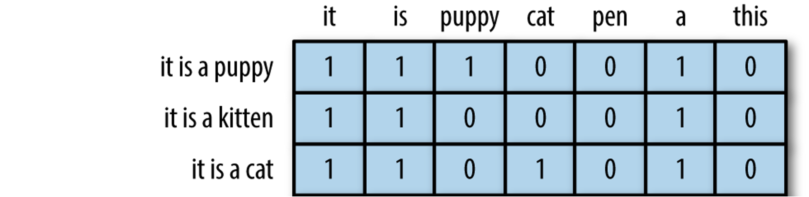
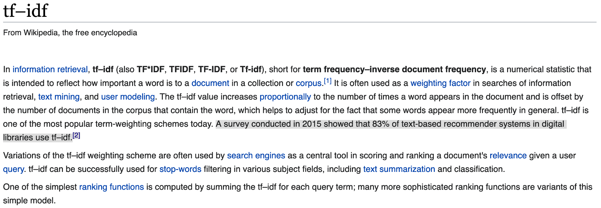
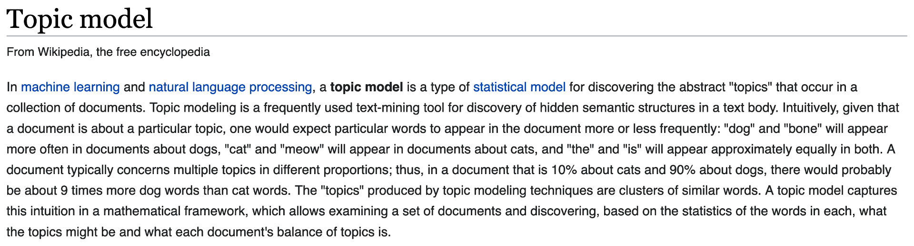
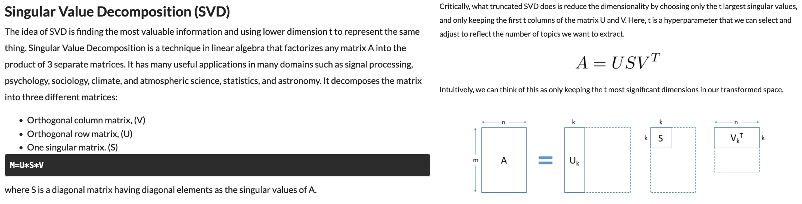
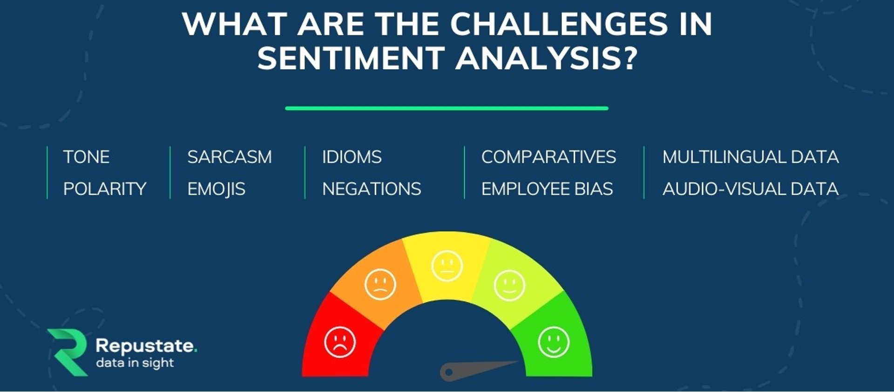

Chapter 3 - Document encoding (TF-IDF), topic modeling, sentiment analysis, building text classifiers¶
2022 February 2
import os
import pandas as pd
from sklearn.feature_extraction.text import CountVectorizer, TfidfVectorizer, TfidfTransformer
from sklearn.decomposition import TruncatedSVD
import nltk
from nltk.corpus import movie_reviews
import numpy as np
from sklearn.utils import shuffle
from sklearn.pipeline import Pipeline
from sklearn.linear_model import LogisticRegression
from sklearn.model_selection import cross_val_score, train_test_split
from sklearn.metrics import roc_curve, roc_auc_score, classification_report, accuracy_score, confusion_matrix
import warnings
warnings.filterwarnings("ignore", category = DeprecationWarning)
Document encoding for machine learning¶
In the last chapter you saw that we do not change text to numbers, but instead changed the representation of the text to the numbers in sparse matrix format.
In this format, each row represents a document and each column represents a token from the shared text vocabulary called a feature.
Key terms¶
Document term matrix: contains the frequencies (or TF-IDF scores) of vocabulary terms in a collection of documents in sparse format.
Each row is a document in the corpus.
Each column represents a term (uni-gram, bi-gram, etc.) called a feature.
Bag of words: The simplest text analysis model that standardizes text in a document by removing punctuation, converting the words to lowercase, and counting the token frequencies.
Numeric values indicate that a particular feature is found in a document that number of times.
A 0 indicates that the feature is not found in that document.

modified from “The Effects of Feature Scaling: From Bag-of-Words to Tf-Idf”
TF-IDF: Term frequency–inverse document frequency; a weighted numerical statistic that indicates the uniqueness of a word is in a given document or corpus.
For TF-IDF sparse matrices:
A value closer to 1 indicate that a feature is more relevant to a particular document.
A value closer to 0 indicates that that feature is less/not relevant to that document.


Topic modeling:

Corpus definition: United Nations Human Rights Council Documentation¶
We will select eleven .txt files from the UN HRC as our corpus, stored within the subfolder “human_rights” folder inside the main “data” directory.
These documents contain information about human rights recommendations made by member nations towards countries deemed to be in violation of the HRC.
Learn more about the UN HRC by clicking here.
Define the corpus directory¶
Set the directory’s file path and print the files it contains.
import os
corpus = os.listdir('data/human_rights/')
# View the contents of this directory
corpus
['sanmarino2014.txt',
'tuvalu2013.txt',
'kazakhstan2014.txt',
'cotedivoire2014.txt',
'fiji2014.txt',
'bangladesh2013.txt',
'turkmenistan2013.txt',
'jordan2013.txt',
'monaco2013.txt',
'afghanistan2014.txt',
'djibouti2013.txt']
Store these documents in a data frame¶
import pandas as pd
# Store in an empty dictionary for conversion to data frame
empty_dictionary = {}
# Loop through the folder of documents to open and read each one
for document in corpus:
with open('data/human_rights/' + document, 'r', encoding = 'utf-8') as to_open:
empty_dictionary[document] = to_open.read()
# Populate the data frame with two columns: file name and document text
human_rights = (pd.DataFrame.from_dict(empty_dictionary,
orient = 'index')
.reset_index().rename(index = str,
columns = {'index': 'file_name', 0: 'document_text'}))
View the data frame¶
human_rights
| file_name | document_text | |
|---|---|---|
| 0 | sanmarino2014.txt | \n United Nations \n A/HRC/28/9 \n \n \n\n Ge... |
| 1 | tuvalu2013.txt | \n United Nations \n A/HRC/24/8 \n \n \n\n G... |
| 2 | kazakhstan2014.txt | \n United Nations \n A/HRC/28/10 \n \n \n\n G... |
| 3 | cotedivoire2014.txt | \nDistr.: General 7 July 2014 English Original... |
| 4 | fiji2014.txt | \n United Nations \n A/HRC/28/8 \n \n \n\n Ge... |
| 5 | bangladesh2013.txt | \n United Nations \n A/HRC/24/12 \n \n \n\n ... |
| 6 | turkmenistan2013.txt | \n United Nations \n A/HRC/24/3 \n \n \n\n G... |
| 7 | jordan2013.txt | \nDistr.: General 6 January 2014 \nOriginal: E... |
| 8 | monaco2013.txt | \nDistr.: General 3 January 2014 English Origi... |
| 9 | afghanistan2014.txt | \nDistr.: General 4 April 2014 \nOriginal: Eng... |
| 10 | djibouti2013.txt | \n\nDistr.: General 8 July 2013 English Origin... |
View the text of the first document¶
# first thousand characters
print(human_rights['document_text'][0][:1000])
United Nations
A/HRC/28/9
General Assembly
Distr.: General
24 December 2014
Original: English
Human Rights Council
Twenty-eighth session
Agenda item 6
Universal Periodic Review
Report of the Working Group on the Universal Periodic Review*
* The annex to the present report is circulated as received.
San Marino
Contents
Paragraphs Page
Introduction ............................................................................................................. 1Ð4 3
I. Summary of the proceedings of the review process ................................................ 5Ð77 3
A. Presentation by the State under review ........................................................... 5Ð23 3
B. Interactive dialogue and responses by the State under review ........................ 24Ð77 6
II. Conclusions and/or recommendations ..................................................................... 78Ð81 13
Annex
Composition of the delegation .......
English text preprocessing¶
Create a new column named “clean_text” to store the text as it is preprocessed.
Remove non-alphanumeric characters/punctuation
Remove digits
Remove unicode characters
Remove extra spaces
Convert to lowercase
Lemmatize (optional for now)
Take a look at the first document after each step to see if you can notice what changed.
How else could you improve this process?
NOTE: Remember, this is just a bare bones, basic process. Furthermore, it will not likely work for many other languages.
Remove non-alphanumeric characters/punctuation¶
human_rights['clean_text'] = human_rights['document_text'].str.replace(r'[^\w\s]', ' ', regex = True)
print(human_rights['clean_text'][0][:1000])
United Nations
A HRC 28 9
General Assembly
Distr General
24 December 2014
Original English
Human Rights Council
Twenty eighth session
Agenda item 6
Universal Periodic Review
Report of the Working Group on the Universal Periodic Review
The annex to the present report is circulated as received
San Marino
Contents
Paragraphs Page
Introduction 1Ð4 3
I Summary of the proceedings of the review process 5Ð77 3
A Presentation by the State under review 5Ð23 3
B Interactive dialogue and responses by the State under review 24Ð77 6
II Conclusions and or recommendations 78Ð81 13
Annex
Composition of the delegation
# view third column
human_rights
| file_name | document_text | clean_text | |
|---|---|---|---|
| 0 | sanmarino2014.txt | \n United Nations \n A/HRC/28/9 \n \n \n\n Ge... | \n United Nations \n A HRC 28 9 \n \n \n\n Ge... |
| 1 | tuvalu2013.txt | \n United Nations \n A/HRC/24/8 \n \n \n\n G... | \n United Nations \n A HRC 24 8 \n \n \n\n G... |
| 2 | kazakhstan2014.txt | \n United Nations \n A/HRC/28/10 \n \n \n\n G... | \n United Nations \n A HRC 28 10 \n \n \n\n G... |
| 3 | cotedivoire2014.txt | \nDistr.: General 7 July 2014 English Original... | \nDistr General 7 July 2014 English Original... |
| 4 | fiji2014.txt | \n United Nations \n A/HRC/28/8 \n \n \n\n Ge... | \n United Nations \n A HRC 28 8 \n \n \n\n Ge... |
| 5 | bangladesh2013.txt | \n United Nations \n A/HRC/24/12 \n \n \n\n ... | \n United Nations \n A HRC 24 12 \n \n \n\n ... |
| 6 | turkmenistan2013.txt | \n United Nations \n A/HRC/24/3 \n \n \n\n G... | \n United Nations \n A HRC 24 3 \n \n \n\n G... |
| 7 | jordan2013.txt | \nDistr.: General 6 January 2014 \nOriginal: E... | \nDistr General 6 January 2014 \nOriginal E... |
| 8 | monaco2013.txt | \nDistr.: General 3 January 2014 English Origi... | \nDistr General 3 January 2014 English Origi... |
| 9 | afghanistan2014.txt | \nDistr.: General 4 April 2014 \nOriginal: Eng... | \nDistr General 4 April 2014 \nOriginal Eng... |
| 10 | djibouti2013.txt | \n\nDistr.: General 8 July 2013 English Origin... | \n\nDistr General 8 July 2013 English Origin... |
Remove digits¶
human_rights['clean_text'] = human_rights['clean_text'].str.replace(r'\d', ' ', regex = True)
print(human_rights['clean_text'][0][:1000])
United Nations
A HRC
General Assembly
Distr General
December
Original English
Human Rights Council
Twenty eighth session
Agenda item
Universal Periodic Review
Report of the Working Group on the Universal Periodic Review
The annex to the present report is circulated as received
San Marino
Contents
Paragraphs Page
Introduction Ð
I Summary of the proceedings of the review process Ð
A Presentation by the State under review Ð
B Interactive dialogue and responses by the State under review Ð
II Conclusions and or recommendations Ð
Annex
Composition of the delegation
Remove unicode characters such as Ð and ð¶
human_rights['clean_text'] = human_rights['clean_text'].str.encode('ascii', 'ignore').str.decode('ascii')
print(human_rights['clean_text'][0][:1000])
United Nations
A HRC
General Assembly
Distr General
December
Original English
Human Rights Council
Twenty eighth session
Agenda item
Universal Periodic Review
Report of the Working Group on the Universal Periodic Review
The annex to the present report is circulated as received
San Marino
Contents
Paragraphs Page
Introduction
I Summary of the proceedings of the review process
A Presentation by the State under review
B Interactive dialogue and responses by the State under review
II Conclusions and or recommendations
Annex
Composition of the delegation
Remove extra spaces¶
import regex as re
human_rights['clean_text'] = human_rights['clean_text'].str.replace(r'\s+', ' ', regex = True)
print(human_rights['clean_text'][0][:1000])
United Nations A HRC General Assembly Distr General December Original English Human Rights Council Twenty eighth session Agenda item Universal Periodic Review Report of the Working Group on the Universal Periodic Review The annex to the present report is circulated as received San Marino Contents Paragraphs Page Introduction I Summary of the proceedings of the review process A Presentation by the State under review B Interactive dialogue and responses by the State under review II Conclusions and or recommendations Annex Composition of the delegation Introduction The Working Group on the Universal Periodic Review established in accordance with Human Rights Council resolution of June held its twentieth session from October to November The review of San Marino was held at the th meeting on October The delegation of San Marino was headed by Pasquale Valentini Minister for Foreign Affairs At its th meeting held on October the Working Group adopted the report on San Marino On January the Hu
Convert to lowercase¶
human_rights['clean_text'] = human_rights['clean_text'].str.lower()
print(human_rights['clean_text'][0][:1000])
united nations a hrc general assembly distr general december original english human rights council twenty eighth session agenda item universal periodic review report of the working group on the universal periodic review the annex to the present report is circulated as received san marino contents paragraphs page introduction i summary of the proceedings of the review process a presentation by the state under review b interactive dialogue and responses by the state under review ii conclusions and or recommendations annex composition of the delegation introduction the working group on the universal periodic review established in accordance with human rights council resolution of june held its twentieth session from october to november the review of san marino was held at the th meeting on october the delegation of san marino was headed by pasquale valentini minister for foreign affairs at its th meeting held on october the working group adopted the report on san marino on january the hu
Lemmatize¶
# import spacy
# !python -m spacy download en_core_web_sm
# !python -m spacy download en_core_web_lg
# nlp = spacy.load('en_core_web_lg')
# human_rights['clean_text'] = human_rights['clean_text'].apply(lambda row: ' '.join([w.lemma_ for w in nlp(row)]))
# print(human_rights['clean_text'][0])
View the updated data frame¶
human_rights
| file_name | document_text | clean_text | |
|---|---|---|---|
| 0 | sanmarino2014.txt | \n United Nations \n A/HRC/28/9 \n \n \n\n Ge... | united nations a hrc general assembly distr g... |
| 1 | tuvalu2013.txt | \n United Nations \n A/HRC/24/8 \n \n \n\n G... | united nations a hrc general assembly distr g... |
| 2 | kazakhstan2014.txt | \n United Nations \n A/HRC/28/10 \n \n \n\n G... | united nations a hrc general assembly distr g... |
| 3 | cotedivoire2014.txt | \nDistr.: General 7 July 2014 English Original... | distr general july english original english f... |
| 4 | fiji2014.txt | \n United Nations \n A/HRC/28/8 \n \n \n\n Ge... | united nations a hrc general assembly distr g... |
| 5 | bangladesh2013.txt | \n United Nations \n A/HRC/24/12 \n \n \n\n ... | united nations a hrc general assembly distr g... |
| 6 | turkmenistan2013.txt | \n United Nations \n A/HRC/24/3 \n \n \n\n G... | united nations a hrc general assembly distr g... |
| 7 | jordan2013.txt | \nDistr.: General 6 January 2014 \nOriginal: E... | distr general january original english genera... |
| 8 | monaco2013.txt | \nDistr.: General 3 January 2014 English Origi... | distr general january english original englis... |
| 9 | afghanistan2014.txt | \nDistr.: General 4 April 2014 \nOriginal: Eng... | distr general april original english general ... |
| 10 | djibouti2013.txt | \n\nDistr.: General 8 July 2013 English Origin... | distr general july english original english f... |
Unsupervised learning with TfidfVectorizer()¶
Remember CountVectorizer() for creating Bag of Word models? Bag of Words models are inputs for Latent Dirichlet allocation.
However, let’s extend this idea to TfidfVectorizer(). Each row will still be a colunm in our matrix and each column will still be a linguistic feature, but the cells will now be populated by the word uniqueness weights instead of frequencies.
This will be the input for Truncated Singular Value Decomposition instead of LDA.
from sklearn.feature_extraction.text import TfidfVectorizer
tf_vectorizer = TfidfVectorizer(ngram_range = (1, 3),
stop_words = 'english',
max_df = 0.50
)
tf_sparse = tf_vectorizer.fit_transform(human_rights['clean_text'])
tf_sparse.shape
(11, 88194)
print(tf_sparse)
(0, 41201) 0.004841792538927591
(0, 33118) 0.004841792538927591
(0, 52297) 0.004841792538927591
(0, 83563) 0.004841792538927591
(0, 48098) 0.004841792538927591
(0, 73938) 0.004841792538927591
(0, 70099) 0.004841792538927591
(0, 50457) 0.004841792538927591
(0, 57730) 0.004841792538927591
(0, 5933) 0.004841792538927591
(0, 2131) 0.004841792538927591
(0, 19496) 0.004841792538927591
(0, 4456) 0.004841792538927591
(0, 51455) 0.004841792538927591
(0, 2831) 0.004841792538927591
(0, 41350) 0.004841792538927591
(0, 7670) 0.004841792538927591
(0, 84240) 0.004841792538927591
(0, 51495) 0.004841792538927591
(0, 2835) 0.004841792538927591
(0, 45547) 0.004138587998252598
(0, 21498) 0.004841792538927591
(0, 29085) 0.004841792538927591
(0, 56075) 0.004841792538927591
(0, 78289) 0.004841792538927591
: :
(10, 56156) 0.005334258825700086
(10, 64482) 0.005334258825700086
(10, 12086) 0.006065489955079169
(10, 54457) 0.006065489955079169
(10, 24386) 0.004303646433350054
(10, 40670) 0.008607292866700108
(10, 50511) 0.006065489955079169
(10, 67275) 0.008607292866700108
(10, 30214) 0.00476707189726019
(10, 65265) 0.005334258825700086
(10, 21793) 0.00476707189726019
(10, 67704) 0.004303646433350054
(10, 31604) 0.005334258825700086
(10, 83182) 0.006065489955079169
(10, 80749) 0.006065489955079169
(10, 79281) 0.014301215691780571
(10, 28564) 0.004303646433350054
(10, 59645) 0.025821878600100327
(10, 63422) 0.03012552503345038
(10, 73852) 0.025821878600100327
(10, 76145) 0.005334258825700086
(10, 50217) 0.008607292866700108
(10, 30122) 0.010668517651400172
(10, 8598) 0.010668517651400172
(10, 19266) 0.008607292866700108
Convert the tfidf sparse matrix to data frame¶
tfidf_df = pd.DataFrame(tf_sparse.todense(), columns = tf_vectorizer.get_feature_names())
tfidf_df
| abasi | abasi desk | abasi desk officer | abdi | abdi ismael | abdi ismael hersi | abdou | abdou prsident | abdou prsident la | abduction | ... | zone social | zone social benefits | zones | zones inclusive | zones inclusive education | zones senegal | zones senegal recommendations | zouon | zouon bi | zouon bi tidou | |
|---|---|---|---|---|---|---|---|---|---|---|---|---|---|---|---|---|---|---|---|---|---|
| 0 | 0.000000 | 0.000000 | 0.000000 | 0.000000 | 0.000000 | 0.000000 | 0.000000 | 0.000000 | 0.000000 | 0.000000 | ... | 0.000000 | 0.000000 | 0.000000 | 0.000000 | 0.000000 | 0.000000 | 0.000000 | 0.000000 | 0.000000 | 0.000000 |
| 1 | 0.000000 | 0.000000 | 0.000000 | 0.000000 | 0.000000 | 0.000000 | 0.000000 | 0.000000 | 0.000000 | 0.000000 | ... | 0.000000 | 0.000000 | 0.000000 | 0.000000 | 0.000000 | 0.000000 | 0.000000 | 0.000000 | 0.000000 | 0.000000 |
| 2 | 0.000000 | 0.000000 | 0.000000 | 0.000000 | 0.000000 | 0.000000 | 0.000000 | 0.000000 | 0.000000 | 0.004775 | ... | 0.007108 | 0.007108 | 0.006076 | 0.007108 | 0.007108 | 0.000000 | 0.000000 | 0.000000 | 0.000000 | 0.000000 |
| 3 | 0.000000 | 0.000000 | 0.000000 | 0.000000 | 0.000000 | 0.000000 | 0.000000 | 0.000000 | 0.000000 | 0.000000 | ... | 0.000000 | 0.000000 | 0.000000 | 0.000000 | 0.000000 | 0.000000 | 0.000000 | 0.006234 | 0.006234 | 0.006234 |
| 4 | 0.000000 | 0.000000 | 0.000000 | 0.000000 | 0.000000 | 0.000000 | 0.000000 | 0.000000 | 0.000000 | 0.000000 | ... | 0.000000 | 0.000000 | 0.000000 | 0.000000 | 0.000000 | 0.000000 | 0.000000 | 0.000000 | 0.000000 | 0.000000 |
| 5 | 0.000000 | 0.000000 | 0.000000 | 0.000000 | 0.000000 | 0.000000 | 0.000000 | 0.000000 | 0.000000 | 0.010880 | ... | 0.000000 | 0.000000 | 0.000000 | 0.000000 | 0.000000 | 0.000000 | 0.000000 | 0.000000 | 0.000000 | 0.000000 |
| 6 | 0.000000 | 0.000000 | 0.000000 | 0.000000 | 0.000000 | 0.000000 | 0.000000 | 0.000000 | 0.000000 | 0.000000 | ... | 0.000000 | 0.000000 | 0.006219 | 0.000000 | 0.000000 | 0.007276 | 0.007276 | 0.000000 | 0.000000 | 0.000000 |
| 7 | 0.000000 | 0.000000 | 0.000000 | 0.000000 | 0.000000 | 0.000000 | 0.000000 | 0.000000 | 0.000000 | 0.004741 | ... | 0.000000 | 0.000000 | 0.000000 | 0.000000 | 0.000000 | 0.000000 | 0.000000 | 0.000000 | 0.000000 | 0.000000 |
| 8 | 0.000000 | 0.000000 | 0.000000 | 0.000000 | 0.000000 | 0.000000 | 0.000000 | 0.000000 | 0.000000 | 0.000000 | ... | 0.000000 | 0.000000 | 0.000000 | 0.000000 | 0.000000 | 0.000000 | 0.000000 | 0.000000 | 0.000000 | 0.000000 |
| 9 | 0.007519 | 0.007519 | 0.007519 | 0.000000 | 0.000000 | 0.000000 | 0.000000 | 0.000000 | 0.000000 | 0.005051 | ... | 0.000000 | 0.000000 | 0.000000 | 0.000000 | 0.000000 | 0.000000 | 0.000000 | 0.000000 | 0.000000 | 0.000000 |
| 10 | 0.000000 | 0.000000 | 0.000000 | 0.007096 | 0.007096 | 0.007096 | 0.007096 | 0.007096 | 0.007096 | 0.000000 | ... | 0.000000 | 0.000000 | 0.000000 | 0.000000 | 0.000000 | 0.000000 | 0.000000 | 0.000000 | 0.000000 | 0.000000 |
11 rows × 88194 columns
View 20 highest weighted words¶
tfidf_df.max().sort_values(ascending = False).head(n = 20)
monaco 0.718573
tuvalu 0.638645
fiji 0.566999
turkmenistan 0.566983
san 0.551964
jordan 0.482716
marino 0.455128
san marino 0.455128
kazakhstan 0.448850
divoire 0.330871
te divoire 0.330871
te 0.306268
kazakhstans 0.284333
bangladeshs 0.251033
elimination violence women 0.250640
elimination violence 0.250640
djiboutis 0.248364
reconciliation 0.245134
fgm 0.194096
afghan 0.180447
dtype: float64
Add country name to tfidf_df¶
# wrangle the country names from the human_rights data frame
countries = human_rights['file_name'].str.slice(stop = -8)
countries = list(countries)
countries
['sanmarino',
'tuvalu',
'kazakhstan',
'cotedivoire',
'fiji',
'bangladesh',
'turkmenistan',
'jordan',
'monaco',
'afghanistan',
'djibouti']
tfidf_df['COUNTRY'] = countries
tfidf_df
| abasi | abasi desk | abasi desk officer | abdi | abdi ismael | abdi ismael hersi | abdou | abdou prsident | abdou prsident la | abduction | ... | zone social benefits | zones | zones inclusive | zones inclusive education | zones senegal | zones senegal recommendations | zouon | zouon bi | zouon bi tidou | COUNTRY | |
|---|---|---|---|---|---|---|---|---|---|---|---|---|---|---|---|---|---|---|---|---|---|
| 0 | 0.000000 | 0.000000 | 0.000000 | 0.000000 | 0.000000 | 0.000000 | 0.000000 | 0.000000 | 0.000000 | 0.000000 | ... | 0.000000 | 0.000000 | 0.000000 | 0.000000 | 0.000000 | 0.000000 | 0.000000 | 0.000000 | 0.000000 | sanmarino |
| 1 | 0.000000 | 0.000000 | 0.000000 | 0.000000 | 0.000000 | 0.000000 | 0.000000 | 0.000000 | 0.000000 | 0.000000 | ... | 0.000000 | 0.000000 | 0.000000 | 0.000000 | 0.000000 | 0.000000 | 0.000000 | 0.000000 | 0.000000 | tuvalu |
| 2 | 0.000000 | 0.000000 | 0.000000 | 0.000000 | 0.000000 | 0.000000 | 0.000000 | 0.000000 | 0.000000 | 0.004775 | ... | 0.007108 | 0.006076 | 0.007108 | 0.007108 | 0.000000 | 0.000000 | 0.000000 | 0.000000 | 0.000000 | kazakhstan |
| 3 | 0.000000 | 0.000000 | 0.000000 | 0.000000 | 0.000000 | 0.000000 | 0.000000 | 0.000000 | 0.000000 | 0.000000 | ... | 0.000000 | 0.000000 | 0.000000 | 0.000000 | 0.000000 | 0.000000 | 0.006234 | 0.006234 | 0.006234 | cotedivoire |
| 4 | 0.000000 | 0.000000 | 0.000000 | 0.000000 | 0.000000 | 0.000000 | 0.000000 | 0.000000 | 0.000000 | 0.000000 | ... | 0.000000 | 0.000000 | 0.000000 | 0.000000 | 0.000000 | 0.000000 | 0.000000 | 0.000000 | 0.000000 | fiji |
| 5 | 0.000000 | 0.000000 | 0.000000 | 0.000000 | 0.000000 | 0.000000 | 0.000000 | 0.000000 | 0.000000 | 0.010880 | ... | 0.000000 | 0.000000 | 0.000000 | 0.000000 | 0.000000 | 0.000000 | 0.000000 | 0.000000 | 0.000000 | bangladesh |
| 6 | 0.000000 | 0.000000 | 0.000000 | 0.000000 | 0.000000 | 0.000000 | 0.000000 | 0.000000 | 0.000000 | 0.000000 | ... | 0.000000 | 0.006219 | 0.000000 | 0.000000 | 0.007276 | 0.007276 | 0.000000 | 0.000000 | 0.000000 | turkmenistan |
| 7 | 0.000000 | 0.000000 | 0.000000 | 0.000000 | 0.000000 | 0.000000 | 0.000000 | 0.000000 | 0.000000 | 0.004741 | ... | 0.000000 | 0.000000 | 0.000000 | 0.000000 | 0.000000 | 0.000000 | 0.000000 | 0.000000 | 0.000000 | jordan |
| 8 | 0.000000 | 0.000000 | 0.000000 | 0.000000 | 0.000000 | 0.000000 | 0.000000 | 0.000000 | 0.000000 | 0.000000 | ... | 0.000000 | 0.000000 | 0.000000 | 0.000000 | 0.000000 | 0.000000 | 0.000000 | 0.000000 | 0.000000 | monaco |
| 9 | 0.007519 | 0.007519 | 0.007519 | 0.000000 | 0.000000 | 0.000000 | 0.000000 | 0.000000 | 0.000000 | 0.005051 | ... | 0.000000 | 0.000000 | 0.000000 | 0.000000 | 0.000000 | 0.000000 | 0.000000 | 0.000000 | 0.000000 | afghanistan |
| 10 | 0.000000 | 0.000000 | 0.000000 | 0.007096 | 0.007096 | 0.007096 | 0.007096 | 0.007096 | 0.007096 | 0.000000 | ... | 0.000000 | 0.000000 | 0.000000 | 0.000000 | 0.000000 | 0.000000 | 0.000000 | 0.000000 | 0.000000 | djibouti |
11 rows × 88195 columns
Examine unique words by each document/country¶
Change the country names to view their highest rated terms.
country = tfidf_df[tfidf_df['COUNTRY'] == 'jordan']
country.max(numeric_only = True).sort_values(ascending = False).head(20)
jordan 0.482716
jordanian 0.127019
press publications 0.112906
publications 0.108571
syrian 0.098792
constitutional amendments 0.096508
publications law 0.091736
press publications law 0.091736
syrian refugees 0.084679
websites 0.072381
reservations 0.071108
commitment jordan 0.063509
reservations convention 0.060317
news websites 0.056453
al 0.054286
personal status 0.054286
news 0.054286
personal 0.053046
reservations convention elimination 0.048254
hosting 0.042437
dtype: float64
country = tfidf_df[tfidf_df['COUNTRY'] == 'jordan']
country.max(numeric_only = True).sort_values(ascending = False).head(20)
jordan 0.482716
jordanian 0.127019
press publications 0.112906
publications 0.108571
syrian 0.098792
constitutional amendments 0.096508
publications law 0.091736
press publications law 0.091736
syrian refugees 0.084679
websites 0.072381
reservations 0.071108
commitment jordan 0.063509
reservations convention 0.060317
news websites 0.056453
al 0.054286
personal status 0.054286
news 0.054286
personal 0.053046
reservations convention elimination 0.048254
hosting 0.042437
dtype: float64
Topic modeling¶

from sklearn.decomposition import TruncatedSVD
tsvd = TruncatedSVD(n_components = 5,
random_state = 1,
algorithm = 'arpack')
tsvd.fit(tf_sparse)
TruncatedSVD(algorithm='arpack', n_components=5, random_state=1)
print(tsvd.explained_variance_ratio_)
[0.00816051 0.10375827 0.10320114 0.09968319 0.10115778]
print(tsvd.singular_values_)
[1.13997839 1.01408739 1.00306128 0.99825596 0.99320396]
def topics(model, feature_names, n_top_words):
for topic_idx, topic in enumerate(model.components_):
print("\nTopic #{}:".format(topic_idx))
print(" ".join([feature_names[i]
for i in topic.argsort()[:-n_top_words - 1:-1]]))
tf_features = tf_vectorizer.get_feature_names()
topics(tsvd, tf_features, 20)
Topic #0:
turkmenistan kazakhstan jordan fiji tuvalu divoire te divoire monaco te reconciliation bangladeshs san elimination violence elimination violence women kazakhstans fgm djiboutis marino san marino violence women law
Topic #1:
monaco san marino san marino te divoire divoire te reconciliation fgm djiboutis op crc fiji san marinos marinos monegasque national reconciliation elimination forms racial forms racial discrimination forms racial international convention elimination
Topic #2:
tuvalu fiji djiboutis national strategic climate change strategic water sanitation sanitation fgm safe drinking safe drinking water rapporteur human right rapporteur human special rapporteur human human right safe climate national gender policy national gender fijian drinking water sanitation
Topic #3:
te divoire divoire te reconciliation fgm national reconciliation jordan djiboutis ivorian national development plan elimination violence elimination violence women truth genital mutilation genital female genital female genital mutilation dialogue truth reconciliation truth reconciliation dialogue truth
Topic #4:
monaco jordan tuvalu jordanian press publications publications monegasque syrian constitutional amendments bangladeshs publications law press publications law principality nationality commended monaco syrian refugees reservations des sanitation websites
UN HRC text analysis - what next?¶
Keep in mind that we have not even begun to consider named entities and parts of speech. How might country names be swamping the five topics produced?
Also, read this post about how to grid search for the best topic models
TODO: visualize, named entity recognition, part of speech tagging, hyphenated words, contractions, context, importance of stopwords, etc.
Sentiment analysis¶
Sentiment analysis is the contextual mining of text data that elicits abstract information in source materials to determine if data are positive, negative, or neutral.

Download the nltk built-in movie reviews dataset¶
import nltk
from nltk.corpus import movie_reviews
nltk.download("movie_reviews")
[nltk_data] Downloading package movie_reviews to
[nltk_data] /Users/evanmuzzall/nltk_data...
[nltk_data] Package movie_reviews is already up-to-date!
True
Define x (reviews) and y (judgements) variables¶
# Extract our x (reviews) and y (judgements) variables
reviews = [movie_reviews.raw(fileid) for fileid in movie_reviews.fileids()]
judgements = [movie_reviews.categories(fileid)[0] for fileid in movie_reviews.fileids()]
# Save in a dataframe
movies = pd.DataFrame({"Reviews" : reviews,
"Judgements" : judgements})
movies.head()
| Reviews | Judgements | |
|---|---|---|
| 0 | plot : two teen couples go to a church party ,... | neg |
| 1 | the happy bastard's quick movie review \ndamn ... | neg |
| 2 | it is movies like these that make a jaded movi... | neg |
| 3 | " quest for camelot " is warner bros . ' firs... | neg |
| 4 | synopsis : a mentally unstable man undergoing ... | neg |
movies.shape
(2000, 2)
Shuffle the reviews¶
import numpy as np
from sklearn.utils import shuffle
x, y = shuffle(np.array(movies.Reviews), np.array(movies.Judgements), random_state = 1)
# change x[0] and y[0] to see different reviews
x[0], print("Human review was:", y[0])
Human review was: neg
('steve martin is one of the funniest men alive . \nif you can take that as a true statement , then your disappointment at this film will equal mine . \nmartin can be hilarious , creating some of the best laugh-out-loud experiences that have ever taken place in movie theaters . \nyou won\'t find any of them here . \nthe old television series that this is based on has its moments of humor and wit . \nbilko ( and the name isn\'t an accident ) is the head of an army motor pool group , but his passion is his schemes . \nevery episode involves the sergeant and his men in one or another hair-brained plan to get rich quick while outwitting the officers of the base . \n " mchale\'s navy " \'s granddaddy . \nthat\'s the idea behind this movie too , but the difference is that , as far-fetched and usually goofy as the television series was , it was funny . \nthere is not one laugh in the film . \nthe re-make retains the goofiness , but not the entertainment . \neverything is just too clean . \nit was obviously made on a hollywood back lot and looks every bit like it . \nit all looks brand new , even the old beat-up stuff . \nmartin is remarkably small in what should have been a bigger than life role . \nin the original , phil silvers played the huckster with a heart of gold and more than a touch of sleaziness . \nmartin\'s bilko is a pale imitation . \nthe only semi-bright spot is phil hartman as bilko\'s arch-enemy . \nit\'s not saying much , considering martin\'s lackluster character , but hartman leaves him in the dust . \n',
None)
Pipelines¶
scikit-learn offers hand ways to build machine learning pipelines: https://scikit-learn.org/stable/modules/generated/sklearn.pipeline.Pipeline.html
The “standard” way¶
# standard training/test split (no cross validation)
x_train, x_test, y_train, y_test = train_test_split(x, y, test_size = 0.30, random_state = 0)
# get tfidf values
tfidf = TfidfVectorizer()
tfidf.fit(x)
x_train = tfidf.transform(x_train)
x_test = tfidf.transform(x_test)
# instantiate, train, and test an logistic regression model
logit_class = LogisticRegression(solver = 'liblinear',
penalty = 'l2',
C = 1000,
random_state = 1)
model = logit_class.fit(x_train, y_train)
# test set accuracy
model.score(x_test, y_test)
0.8216666666666667
\(k\)-fold cross-validated model¶
# Cross-validated model!
text_clf = Pipeline([('vect', CountVectorizer(ngram_range=(1, 3))),
('tfidf', TfidfTransformer()),
('clf', LogisticRegression(solver = 'liblinear',
penalty = 'l2',
C = 1000,
random_state = 1))
])
# for your own research, thesis, or publication
# you would select cv equal to 10 or 20
scores = cross_val_score(text_clf, x, y, cv = 3)
print(scores, np.mean(scores))
[0.8155922 0.79910045 0.80630631] 0.8069996533264899
Top 25 features for positive and negative reviews¶
feature_names = tfidf.get_feature_names()
top25pos = np.argsort(model.coef_[0])[-25:]
print("Top features for positive reviews:")
print(list(feature_names[j] for j in top25pos))
print()
print("Top features for negative reviews:")
top25neg = np.argsort(model.coef_[0])[:25]
print(list(feature_names[j] for j in top25neg))
Top features for positive reviews:
['gas', 'perfectly', 'family', 'political', 'will', 'seen', 'rocky', 'always', 'different', 'excellent', 'also', 'many', 'is', 'matrix', 'trek', 'well', 'definitely', 'truman', 'very', 'great', 'quite', 'fun', 'jackie', 'as', 'and']
Top features for negative reviews:
['bad', 'only', 'plot', 'worst', 'there', 'boring', 'script', 'why', 'have', 'unfortunately', 'dull', 'poor', 'any', 'waste', 'nothing', 'looks', 'ridiculous', 'supposed', 'no', 'even', 'harry', 'awful', 'then', 'reason', 'wasted']
new_bad_review = "This was the most awful worst super bad movie ever!"
features = tfidf.transform([new_bad_review])
model.predict(features)
array(['neg'], dtype=object)
new_good_review = 'WHAT A WONDERFUL, FANTASTIC MOVIE!!!'
features = tfidf.transform([new_good_review])
model.predict(features)
array(['pos'], dtype=object)
# type another review here
my_review = 'I hated this movie, even though my friend loved it'
my_features = tfidf.transform([my_review])
model.predict(my_features)
array(['neg'], dtype=object)
Going further: Anchored topic modeling¶
“Correlation Explanation (CorEx) is a topic model that yields rich topics that are maximally informative about a set of documents. The advantage of using CorEx versus other topic models is that it can be easily run as an unsupervised, semi-supervised, or hierarchical topic model depending on a user’s needs. For semi-supervision, CorEx allows a user to integrate their domain knowledge via “anchor words.” This integration is flexible and allows the user to guide the topic model in the direction of those words. This allows for creative strategies that promote topic representation, separability, and aspects. More generally, this implementation of CorEx is good for clustering any sparse binary data.”
Visit the GitHub repo: https://github.com/gregversteeg/corex_topic
Read the paper: Gallagher, R. J., Reing, K., Kale, D., and Ver Steeg, G. “Anchored Correlation Explanation: Topic Modeling with Minimal Domain Knowledge.” Transactions of the Association for Computational Linguistics (TACL), 2017.
Quiz - 20 newsgroups dataset¶
Go through the 20 newsgroups text dataset to get familiar with newspaper data: https://scikit-learn.org/0.19/datasets/twenty_newsgroups.html
“The 20 newsgroups dataset comprises around 18000 newsgroups posts on 20 topics split in two subsets: one for training (or development) and the other one for testing (or for performance evaluation). The split between the train and test set is based upon a messages posted before and after a specific date.”